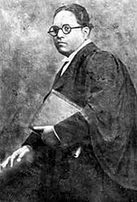

About Dr. B.R. Ambedkar
Dr. Bhimrao Ramji Ambedkar was a social reformer, jurist, and the principal architect of the Constitution of India. He dedicated his life to fighting against social discrimination and advocating for the rights of the marginalized sections of society. His contributions to Indian society and his vision for equality and justice continue to inspire millions.
Education
Early Education
In 1897, Dr. B.R. Ambedkar's family moved to Mumbai, where he became the only untouchable enrolled at Elphinstone High School. In 1906, at the age of 15, he married a nine-year-old girl, Ramabai, as per the prevailing custom.
He passed his matriculation examination in 1907 and entered Elphinstone College the following year, becoming the first from his Mahar caste to do so. Upon passing his English fourth standard examinations, his community celebrated his success by presenting him with a biography of the Buddha by Dada Keluskar.
Higher Education
By 1912, Ambedkar obtained his degree in economics and political science from Bombay University and prepared to take up employment with the Baroda state government. After briefly returning to Mumbai due to his father's illness, he was awarded a Baroda State Scholarship in 1913, allowing him to pursue postgraduate education at Columbia University in New York City.
Studies at Columbia University
At Columbia University, Ambedkar earned his M.A. in 1915, majoring in economics and studying sociology, history, philosophy, and anthropology. He presented his thesis, "Ancient Indian Commerce," and was influenced by John Dewey's work on democracy. In 1916, he completed his second master's thesis on "National Dividend of India – A Historic and Analytical Study" and presented the paper "Castes in India: Their Mechanism, Genesis and Development" at a seminar.
Further Studies and Achievements
In 1916, Ambedkar enrolled for the Bar course at Gray's Inn and simultaneously started working on a doctoral thesis at the London School of Economics. Although he had to return to India in 1917 due to the end of his scholarship, he later returned to London to complete his studies. He earned a master's degree in 1921 with a thesis on "The problem of the rupee: Its origin and its solution," and a D.Sc. in Economics from the University of London in 1923. The same year, he was called to the Bar by Gray's Inn.
Opposition to Untouchability
Early Career and Challenges
After completing his education, Dr. Ambedkar was bound to serve the Princely State of Baroda, as he had been educated by them. He was appointed Military Secretary to the Gaikwad, but faced discrimination and had to resign shortly after. In his autobiography, Waiting for a Visa, he describes the challenges he faced due to his untouchable status.
Ambedkar worked as a private tutor, accountant, and even established an investment consulting business, but faced continuous setbacks when clients discovered his caste. In 1918, he became a professor of political economy at Sydenham College of Commerce and Economics in Mumbai, where he faced discrimination from other professors.
Advocacy and Legal Career
Ambedkar was invited to testify before the Southborough Committee, which was preparing the Government of India Act 1919. He argued for separate electorates and reservations for untouchables and other marginalized communities. In 1920, he began publishing the weekly Mooknayak (Leader of the Silent) with the help of Shahu of Kolhapur.
As a legal professional, Ambedkar defended non-Brahmin leaders in a high-profile libel case in 1926, marking a significant victory for social justice. He established the Bahishkrit Hitakarini Sabha to promote education and socio-economic improvement among the "outcastes" and started several periodicals to advocate for Dalit rights.
Active Movements Against Untouchability
In 1927, Ambedkar launched public movements to challenge untouchability. He led satyagrahas to open public drinking water resources and fought for the right of untouchables to enter Hindu temples. One notable satyagraha was in Mahad, where he led a movement to allow untouchables to draw water from the town's main water tank.
Ambedkar also condemned the Hindu text Manusmriti for its support of caste discrimination. On December 25, 1927, he led thousands in burning copies of the text, an event now celebrated annually as Manusmriti Dahan Din by Ambedkarites and Dalits.
Kalaram Temple Movement
In 1930, Ambedkar organized the Kalaram Temple movement, where about 15,000 volunteers marched to the Kalaram Temple in Nashik, demanding entry. Despite their peaceful and disciplined protest, they were denied entry by the Brahmin authorities, highlighting the deep-rooted caste discrimination.
Achievements
- Principal architect of the Constitution of India
- First Law and Justice Minister of independent India
- Champion of social justice and equality
- Founder of the Independent Labour Party
- Key figure in the Dalit Buddhist movement